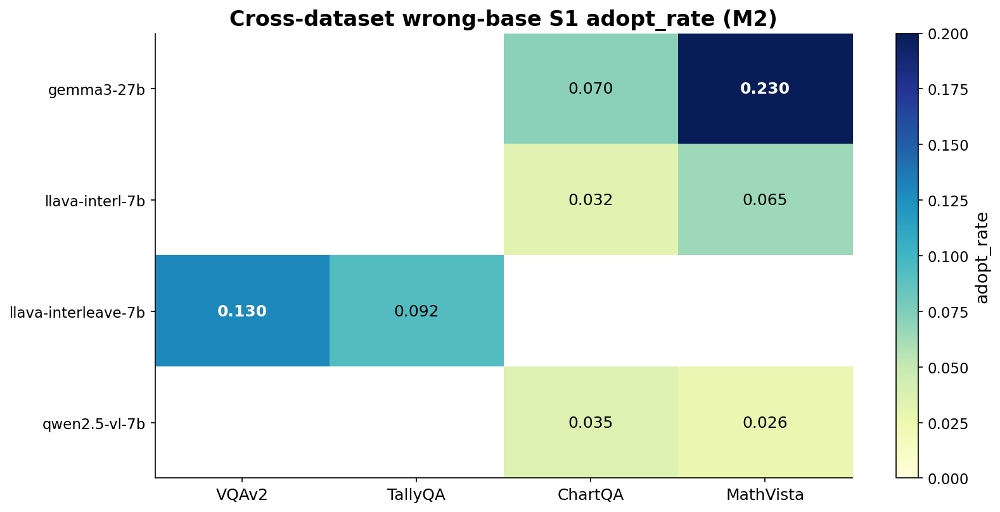
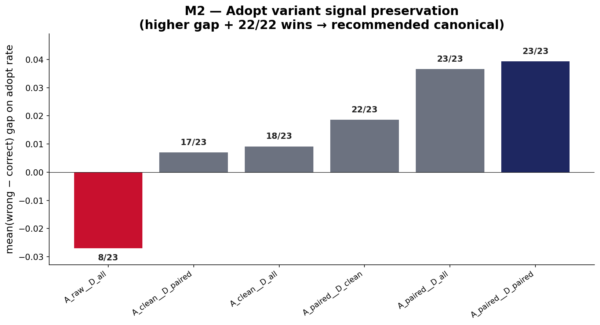
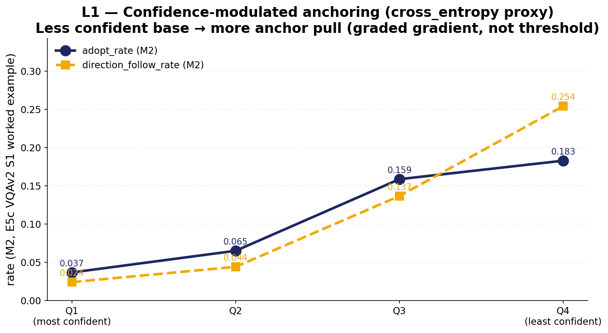
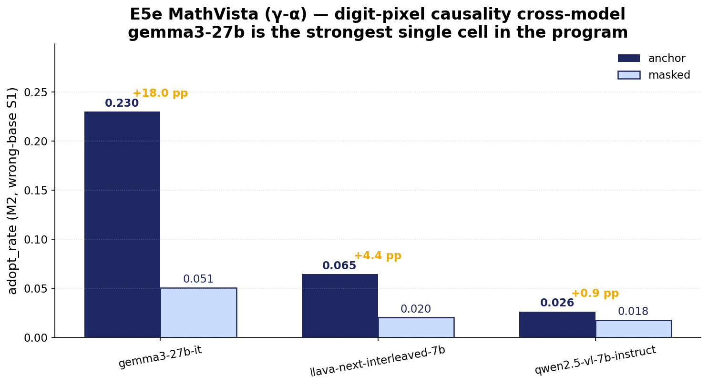

EMNLP 2026 — submission
Cross-modal numerical anchoring in vision–language models
Authors TBD · Affiliation TBD
TL;DR
Showing a vision–language model an irrelevant second image that contains a number can drag its numeric VQA answer toward that number, even when the question and the target image have nothing to do with it. We isolate this cross-modal numerical anchoring from mere multi-image distraction, trace it through the residual stream, and show that a small subspace edit at one mid-stack layer neutralises it without hurting general capability.

The phenomenon
Each VQA item is run under four conditions:
b shows the target image only;
a adds an irrelevant image carrying a single digit (the
anchor);
m uses the same anchor image with the digit pixels inpainted
out;
d swaps the anchor for a digit-free FLUX render. The
a − d gap separates anchoring from generic multi-image
distraction; the a − m gap isolates the digit-pixel
contribution. The interactive demo below lets you flip between
b/a/m/d on six samples and watch the predictions move.
Interactive demo: condition flipper
Pick a sample, then toggle b/a/m/d to see how each
main-panel model's prediction changes. ⚓ marks predictions that
equal the anchor value; bold marks predictions that equal ground truth.
Loading…
Headline results


Mitigation: a single subspace edit
A K=8 anchor-direction subspace at layer L=26 of the main model carries
most of the anchor pull. Subtracting α=1.0 of that
subspace from the residual stream at inference time reduces
direction-follow on the anchored arm without measurably hurting
baseline accuracy or general-capability benchmarks. The chart below
shows the chosen cell on one dataset; the paper's §7.4.5 carries the
full per-dataset table.

Citation
Working BibTeX entry — fields will be finalised post-arXiv.
@inproceedings{anchoring2026,
title = {Cross-modal numerical anchoring in vision--language models},
author = {TBD},
booktitle = {Proceedings of EMNLP},
year = {2026}
}